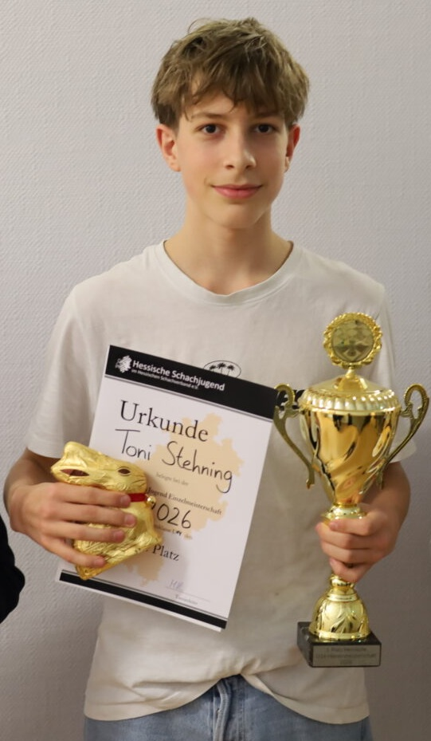
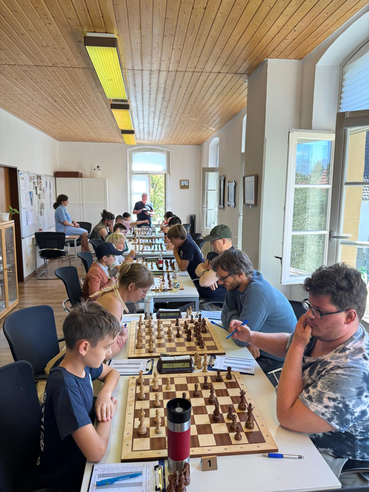

Aktuelles aus dem Verein
+++ Deutsche Frauen-Mannschaftsmeisterschaft der Landesverbände +++
Vom 4. bis 7. Juni wird die DFMM-LV wieder in Braunfels ausgetragen. Alle Informationen finden Sie auf der Turnierseite.
+++ Stadtmeisterschaft 2026 +++
Am 17. April wurde die fünfte Runde der diesjährigen Stadtmeisterschaft gespielt. Im Anschluss an das Nachholspiel in zwei Wochen wird die nächste Paarungsliste (für die sechste Runde am 8. Mai) veröffentlicht.
 Ergebnisse der
fünften Runde
Ergebnisse der
fünften Runde
 Tabelle nach
der fünften Runde
Tabelle nach
der fünften Runde
Alle Dokumente finden Sie auf der Turnierseite.
+++ Starker Auftritt bei den Hessischen Jugend-Einzelmeisterschaften +++

Bad Homburg. Bei den hessischen
Jugend-Einzelmeisterschaften in Bad Homburg, die vom
29. März bis zum 4. April stattfanden, zeigten
zahlreiche Nachwuchstalente ihr Können —
allen voran Toni Stehning, der in der Altersklasse U 14
für ein herausragendes Ergebnis sorgte. Über
mehrere Tage hinweg traten die besten Jugendlichen aus
ganz Hessen im Schach gegeneinander an, um die
begehrten Titel in ihren jeweiligen Altersklassen zu
erringen. Die Veranstaltung war geprägt von
spannenden Wettkämpfen, hoher Leistungsdichte und
großem sportlichem Ehrgeiz.
In der U14-Konkurrenz überzeugte Toni Stehning mit
einer konstant starken Leistung. Von insgesamt sieben
Partien konnte er vier gewinnen und spielte dreimal
Remis, womit er ungeschlagen blieb. Damit sammelte er
starke 5,5 Punkte aus 7 Spielen. Runde für Runde
setzte er sich gegen starke Gegner durch und bewies
dabei nicht nur sein spielerisches Talent, sondern auch
bemerkenswerte Nervenstärke. Besonders in
entscheidenden Momenten behielt er die Ruhe und konnte
enge Partien für sich entscheiden. Am Ende wurde
der Einsatz des Braunfelser Nachwuchsspielers belohnt:
Toni Stehning krönte sein Spiel mit einem ersten
Platz und ist Hessenmeister in der U14. Er
qualifizierte sich damit für die Deutschen
Jugendeinzelmeisterschaften im Schach, die vom 23. bis
31. Mai in Willingen stattfinden werden.
Doch auch ein weiterer Spieler von den Schachfreunden
aus Braunfels machte auf sich aufmerksam: Michel
Stehning zeigte in der Altersklasse U18 eine sehr
ansprechende Leistung. Mit konzentriertem Spiel und
großem Einsatz behauptete er sich in einem
starken Teilnehmerfeld und belegte am Ende einen
erfolgreichen 13. Platz, was seinen positiven
Turnierverlauf unterstreicht.
Die Hessische Schachjugend hat während der
gesamten Woche für eine ausgezeichnete
Organisation des Zentralen Lagers in Bad Homburg
gesorgt. Die angenehme Turnieratmosphäre und das
abwechslungsreiche Rahmenprogramm haben die hessischen
Einzelmeisterschaften zu einem Highlight gemacht.
Ebenso haben die Schachfreunde aus Braunfels u.a. mit
ihrer Jugendarbeit die schachlichen Erfolge ihrer
Nachwuchsspieler unterstützt.
Bericht von Ralf Stehning.
+++ Vereinsmeisterschaft 2026 +++
Ergebnisse der zweiten Runde vom 27. März:
| Felix Hilgert | - | Andreas Diehl | 0 - 1 |
| Ralf Stehning | - | Toni Stehning | ½ - ½ |
| Christian Kokoska | - | Christian Schneider | 0 - 1 |
| Vitali Makstadt | - | Jonas Müller | 1 - 0 |
| Alexander Plaß | - | Joel Späth | 1 - 0 |
| Hans-Peter Ewin | - | Wladislav Geist | 1 - 0 |
| Sam Droß | - | spielfrei | + - - |
 Tabelle nach
der zweiten Runde
Tabelle nach
der zweiten Runde
Die Ergebnisse früherer Runden finden Sie hier.
Die nächste Runde findet am 22. Mai statt.
+++ Neues vom Einsteiger-Cup Mittelhessen +++

Am 17. August war der Beginn des Einsteiger-Cups,
nachdem er am 28. Juni vielversprechend getestet wurde.
Es haben sich 19 Spieler angemeldet, es gab also
fünf Gruppen á vier Spieler und ein
Freilos. Braunfels war mit Günter Hilgert, Lukas
Averianov und Wladislav Geist vertreten. Wladislav war
in der stärksten Gruppe und gewann eine Partie.
Lukas ging in beiden Partien als Sieger hervor.
Günter musste sich leider in beiden Spielen
geschlagen geben.
Am 27. September ging der Einsteiger-Cup in Braunfels
weiter. Für die Gastgeber spielten Günter
Hilgert, Guiseppe und Christian Kokoska. In Runde 1
spielten Günter und Guiseppe gegeneinander -
Günter ging als Sieger hervor, Christian verlor
seine Partie. In der zweiten Partie gingen alle drei
leider leer aus.
Am 1. November war Marburg der Austichter des
Einsteiger-Cups. Günter Hilgert und Wladislav
Geist gingen für Braunfels an den Start.
Während Günter beide Partien für sich
entscheiden konnte, hat Wladislav beide Partien
verloren.
Am 17. Januar fand im Kulturzentrum Hungen der erste
Spieltag des neuen Jahres statt. Mit Sam Droß,
Wladislav Geist und Guiseppe Totaro gab es drei
Braunfelser Teilnehmer. Während Sam gegen
Wladislav in der höchsten Gruppe gewann, konnte
Guiseppe auch einen Sieg einfahren. Leider gingen
Wladislav und Guiseppe in der nächste Partie leer
aus, Sam hingegen konnte auch das zweite Spiel für
sich entscheiden. Der nächste Termin ist am 07.
März in Heuchelheim.
+++ Kalender +++
| Datum | Ort | Veranstaltung |
|---|---|---|
| 26.04.2026 | Raum Bagnols |
LK West: Braunfels I - Niederbrechen II KK: Braunfels V - Battenberg II |
| 08.05.2026 | Raum Bagnols | STM Runde 6 |
| 10.05.2026 | Marburg | KK: Marburg VIII - Braunfels V |
| 29.05.2026 | Raum Bagnols | STM Runde 7 |
| 31.05.2026 |
Raum Bagnols Marburg Battenberg |
BOL: Braunfels II - Hungen-Lich II BOL: Marburg III - Braunfels III KL: Battenberg I - Braunfels IV |
|
04.06.2026 bis 07.06.2026 |
Haus des Gastes |
Deutsche Frauen- Mannschaftsmeisterschaften der Landesverbände |
+++ Allgemeine Informationen +++
Spiellokale:
- Haus des Gastes, Fürst-Ferdinand-Straße 4A, 35619 Braunfels (Räume Bagnols, Newbury und Rohrmoos-Untertal im Nebengebäude über der Stadtbücherei)
- Kurparktreff Braunfels, Am Kurpark 6B, 35619 Braunfels (Ausweichmöglichkeit)
- Jugendtraining (Montags): Öffnung um 17:25, Beginn um 17:30 (bis 19:00)
- Vereinsabend (Freitags): Öffnung um 19:00, Turniere starten um 20:15
- Mannschaftswettkämpfe (Sonntags): Öffnung um 13:30, Partien starten um 14:00